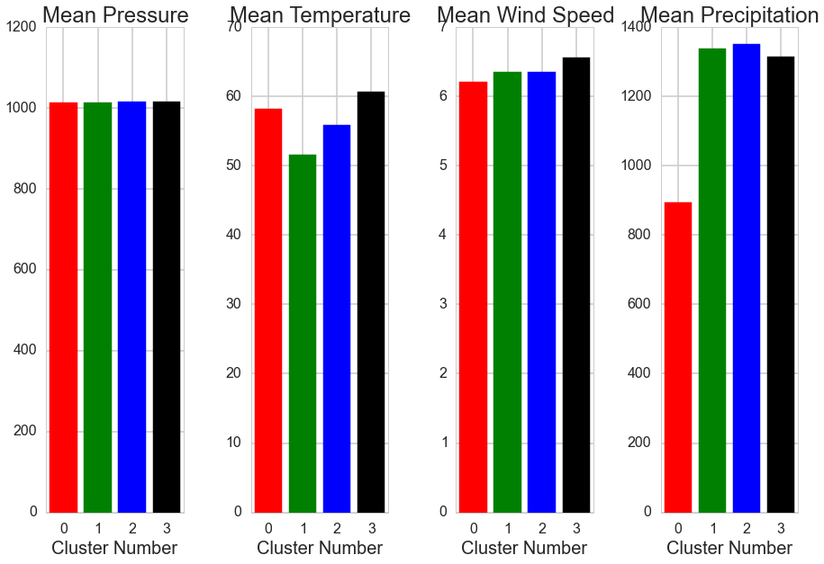
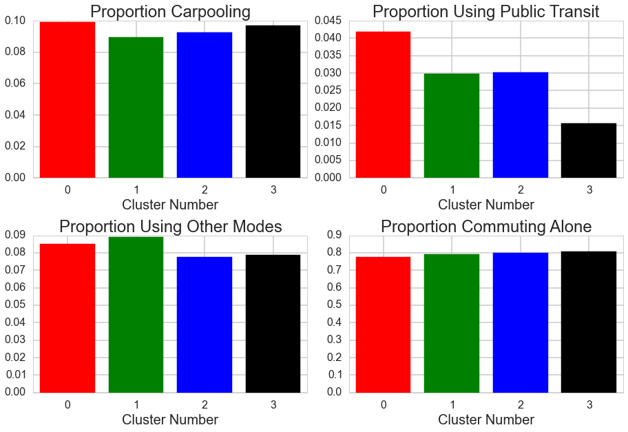

INCLUDE LINK TO VIDEO PRESENTATION HERE
Project Background and Motivation
The World Health Organization reported that in 2012 about 7 million people died as a result of air pollution exposure, a finding that was more than double previous estimates. According to the WHO, this finding “confirms that air pollution is now the world’s largest single environmental health risk.” Air pollution can lead to a variety of potentially fatal conditions such as heart disease, stroke, COPD, and lung cancer. Thus it is critical that more research on air pollution causes and interventions to reduce such pollution be done.
As students at the Harvard T.H. Chan School of Public Health, we want to conduct some research into air pollution in the USA as well as on some of the determinants of such pollution such as weather, commuting, and population density given the severity of this public health issue. By understanding the pollutant profiles of various cities, more targeted and effective interventions for reducing pollution on a by-pollutant-type basis could then be proposed and implemented. Linking these specific profiles to certain determinants would also aid in the creation of powerful air pollution reduction policies. These various analyses could be useful for developing legislation across the USA. Additionally, we could predict the pollutant profiles of cities in the third world, where such measuring of pollutants is not available, based on weather, population, etc. Such prediction would allow for better formulation of air pollution reduction policies for those cities.Initial Questions:
- Are there certain pollutant profiles that characterize groups of US cities?
- What is the distribution of pollutants (air particulate matter, gas levels, etc.) within these clusters?
- What are the determinants (weather, demographics, transportation, etc.) of these pollutant profiles?
- Can we use data on weather, demographics, transportation, etc. to predict a city’s pollutant profiles?
- Can specific policy recommendations be made based on a city’s pollutant profile?
Note: In this analysis we use the word city to refer to a core-based statistical area (CBSA) which is defined as an urban center of at least 10,000 people and the adjacent areas that are tied to the city by commuting
Key Findings
DELETE THIS PARAGRAPH AND JUST LEAVE BULLETS?
Based on our analysis, air quality appears to be a composite of many features, some related to human activity and some related to environmental sources. The relative contribution of these two sources seems to vary across pollutants which has implications about how to design effective overall air quality interventions. Using multiple modeling approaches, we find that some pollutant concentrations, such as NO2 and O3, are easier to predict than others. Additionally, US cities can be clustered into distinct pollutant profiles which are differentiated by environmental and demographic factors.
- Airborne NO2, PM2.5, and O3 of cities can be somewhat predicted based on demographic and weather features, but PM10, CO, and SO2 are not well described from these characteristics
- Prediction models based on US cities do not extend well to French cities for the pollutants that we can best predict
- The relative importance of anthropogenic and environmental factors to air pollutant concentrations varies between pollutants
- Distinct types of cities exist that can be characterized by their particular pollutant profiles
- These clusters can be differentiated by liquid precipitation, air pressure, temperature, and land area
- Differential patterns of missing pollutant data for US cities made imputation of clusters unreliable.
- When French cities were clustered with the same method, their pollutant profiles looked reasonably similar to the clustered US pollutant profiles.
Analysis
Pollutant Data: The six main pollutants included in our analyis are distributed somewhat differently across the US. The interactive visualization allows you to toggle through the six pollutants to get a sense of how they are distributed. NO2 shows clear concentrations in more urban areas which is to be expected as a primary source is car exhaust. O3 concentrations are higher in western areas where temperatures are higher and weather is drier -- consistent with known factors contributing to ozone levels. PM2.5 may have higher concentrations in the midwest and PM10 levels are higher in the southwest. There are other patterns that can be found simply by toggling through the 6 pollutants.
Transit Data: The following plot shows the distribution of transportaion modes across different areas. The shading in the back represents the total number of people in the area. The pies have split the percentage of people who commute using each of the transportation styles listed. You can scroll over the individual pies to get the numbers, zoom in and out, or move around the area to better explore the data. In general, the most dominant form of transportation is driving alone.
Relationships Between Pollutants and Other Factors: Given differences in pollutants across these different CBSAs, we can look to see how demographic and weather variables contribute to the observed pollutant concentrations. The following heatmap shows correlations between various predictors and pollutants. The darker the shading, the stronger the relationship -- red indicates a positive relationship and blue an inverse relationship.
Predicting Pollutants: Models were developed to predict pollutant concentrations in cities based on demographic factors and weather. In general, the models were not completely successful, but we could predict NO2 and ozone with relative accuracy. The predicted values for each observation are plotted against their true values in the figure below.
Unfortunately, these models did not extend well to French cities suggesting limited generalizability and the necessity of other potential predictors to better generate models that will be more generalizable.Anthropogenic vs. Natural Contributions: Understanding the relative contribution of anthropogenic and demographic factors to understanding pollution levels has implications for designing appropriate regulation. To address this question, we developed multivariate models using Generalized Estimating Equations (GEE) for the most promising pollutants, NO2 and ozone. In general, the contributions of different weather and demographic variables differ based on the particular pollutant making interventions to target overall air quality challenging.
Clustering of US CBSAs: There are four distinct clusters of CBSAs in our data based on their pollutant profiles across the six key pollutants. These clusters were found using multiple iterations of k-means on the 80 CBSAs with complete pollutant data. These color-coded clusters are shown on the map below.
These clusters are statisitically significantly different in terms of pollutant profiles with PM10 and NO2 levels most significantly differentiating the clusters. Graphically one can see these differences below.
It was of interest to determine if these four clusters differ significantly in predictors of air pollution such as weather patterns, commuting patterns, and/or population variables. Statistical testing showed that these clusters differ in their profiles of determinants with land area, average air pressure, average yearly temperature, and average yearly precipitation significantly differentiating the clustering. Differences in these determinants can be seen below.
 Future Directions
The analysis presented here is not without limitations. Our best predictive model could only explain about 45% of the variation in ozone leaving much unexplained. Furthermore, in validating these predictive models we saw that in general models built on US data did not perform well in France. Beyond the predictive modeling, issues with missing data for pollutants made clustering cities into distinct pollutant profiles challenging. In the future, steps what would be helpful would be to:
- Collect more predictors -- this includes more weather data, data on land use (agricultural, industrial, commerical, forested, etc.), government air quality regulations, and better transportation information for the validation dataset,
- Expand beyond the year 2010 to see if there are historical trends in air quality
- Incorporate city-specific data rather than using CBSA units via a hierarchical model to account for localized variation in pollutant levels
- Expand to other countries to see if models generalize better in particular areas
- Improve imputation of cities with missing pollutant data to increase coverage of clusters across the US
- Low sample size and low variablity limited our conclusions from the clustering of French cities. Thus we would want to increase the number of cities in our clustering by including ones from across Europe.
Data
All raw data can be found at the following dropbox link
In order to assess the various factors that may influence air quality in urban areas across the United States, 4 main data sources were required:
- Air Quality Data
- Historical Weather Data
- Demographic Data
- Transit Data
Air Quality Data:
Air Quality Data for the various Core-Based Statistical Areas (CBSA's) across the United States were obtained from the EPA's AirData repository. Data was downloaded for the 6 key pollutants for the year of 2010. T
Historical Weather Data:
US weather data was also obtained from the EPA's AirData repository. This includes information of daily temperature, wind speeds, relative humidity, and atmospheric pressure. A secondary source of weather data came from the National Oceanic and Atmospheric Administration (NOAA). Using their FTP site, more detailed breakdown of weather data including wind speeds, temperature, atmospheric pressure, and daily precipitation could be obtained for various stations across the US. This helped fill in missing data and get a finer image of US weather.
Demographic Data:
Demographic information for the CBSA's included in this research came from the US Census Bureau. These files contain information about the total population, the total land area, and the population density of CBSAs in the year 2010, .
Transit Data:
To assess the influence of commuting style on pollutant levels, data on mode of commuting were collected from the 2010 US Census Bureau. These data included breakdown of commuters' modes of transportation into 'Driving Alone,' 'Carpooling,' 'Public Transportation,' and 'Other (Walk/Bike/etc.).'
Github Repository
The analysis for this project can be found at the following github repository. The optimal way to navigate the various ipython notebooks is as follows